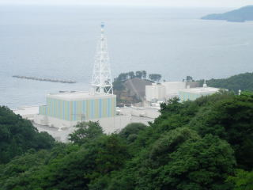
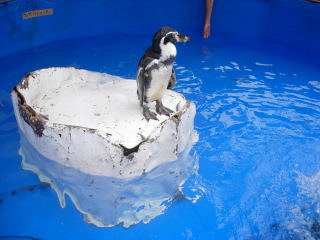

島根原子力館の夏休みこどもまつり
2009/8/9
島根原子力発電所よりちょっと離れた所にある、島根原子力館に行きました。

原子力館から、発電所を撮った写真です。
原子力館の中には、ゲームやおもちゃが多くあり、お子様連れで遊びに行くのにピッタリですね。
今日はこどもまつりってことで、ふれあい水族館がやってました。
無料でペンギン、アザラシ、いろんな種類の亀が見れるので、かなりお得なイベントですね。ショーとかをする訳ではないんですが、とっても近い位置で動物が見れて良かったです。（ペンギンは水槽の真ん中にいたので触れなかったですが、アザラシと亀は触れました。）
